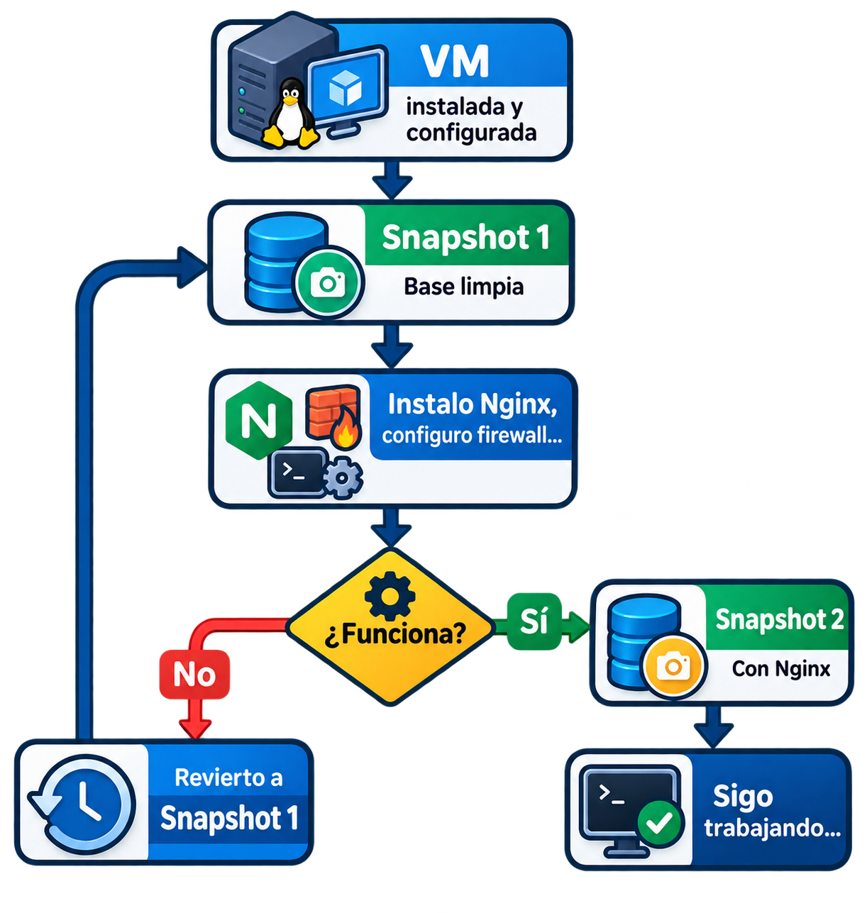

Administración de servidores GNU/Linux
Clase 2: Virtualización
Módulo 1 — Nuestro laboratorio de trabajo
Temas de clase 2
Objetivos de la clase
Al finalizar esta clase vas a poder:
- Explicar qué problema resuelve la virtualización y por qué es la base de la nube.
- Distinguir emulación, virtualización y paravirtualización.
- Diferenciar hipervisores Tipo 1 y Tipo 2.
- Describir qué es una VM y de qué archivos está hecha.
- Entender qué es un snapshot y por qué no reemplaza a un backup.
- Reconocer los modos de red de VirtualBox y cuándo usar cada uno.
- Saber qué es un OVA y para qué sirve.
Por qué damos este tema: durante todo el curso vamos a administrar servidores Linux dentro de máquinas virtuales. La virtualización no es el tema del curso, pero es el piso sobre el que vamos a trabajar 30 clases. Conviene entender qué hay abajo.
Por qué virtualizamos:
Del servidor físico a la infraestructura definida por software
El problema
Antes de la virtualización masiva:
- Un servicio por servidor físico: el de correo, el de base de datos, el de archivos.
- Hardware trabajando al 5-15% de su capacidad la mayor parte del tiempo.
- Aprovisionar un servidor nuevo: comprar, esperar, rackear, cablear. Semanas.
- Un servidor caído es un servidor caído: no se puede "mover" a otro hardware.
Con virtualización:
- Consolidación: decenas de servidores lógicos sobre una misma máquina física.
- Aislamiento: si una VM se rompe, las demás siguen andando.
- Aprovisionamiento en minutos, y clonado de servidores completos.
- Migración en vivo entre nodos físicos, sin apagar el servicio.
- Menos consumo eléctrico, menos rack, menos refrigeración.
Y para nosotros: podemos romper un servidor, probar configuraciones peligrosas y volver atrás en segundos, sin tocar nuestra PC real. Ese es nuestro laboratorio.
Hipervisor y máquina virtual
- El hipervisor es el software que reparte y aísla los recursos físicos —CPU, memoria, disco, red— entre varios sistemas operativos que corren en simultáneo.
- Una máquina virtual (VM) es una computadora definida por software: un conjunto de recursos virtuales (vCPU, memoria, discos, placas de red, firmware) más su estado de ejecución.
- El sistema operativo invitado (guest) se instala sin modificaciones y funciona creyendo que tiene hardware propio.
- El sistema que hospeda todo eso es el anfitrión (host).
La virtualización es la tecnología base de toda la nube moderna: AWS, Azure y GCP no venden servidores, venden VMs.
Tipos de hipervisor
| Característica | Tipo 1 (bare-metal) | Tipo 2 (hosted) |
|---|---|---|
| ¿Dónde corre? | Directo sobre el hardware | Como aplicación sobre un SO |
| Rendimiento | Muy alto | Suficiente para estudio y desarrollo |
| Uso típico | Producción, datacenter | Escritorio, laboratorio |
| Ejemplos | VMware ESXi, Proxmox VE, KVM, Xen, Hyper-V | VirtualBox, VMware Workstation |
- En producción se usan hipervisores tipo 1.
- Para aprender en nuestra PC, VirtualBox (tipo 2) es ideal por su sencillez.
Consultas
(Por qué virtualizamos → hipervisor → máquina virtual → host e invitado)
Emular, virtualizar, paravirtualizar:
Tres cosas distintas que conviven en una misma VM
Las tres técnicas
| Técnica | Qué hace | ¿Misma arquitectura? | Velocidad |
|---|---|---|---|
| Emulación | Software que reproduce el comportamiento de un hardware, instrucción por instrucción | No, puede ser distinta | Órdenes de magnitud más lenta |
| Virtualización | Las instrucciones del guest corren directo sobre la CPU física; el hipervisor sólo intercepta las privilegiadas | Sí, obligatoriamente | Cercana a la nativa |
| Paravirtualización | El guest sabe que es guest y usa drivers optimizados que hablan directo con el hipervisor | Sí | Mejor que emular dispositivos |
Test rápido: ¿la arquitectura del invitado es la misma que la del anfitrión? Si sí, se puede virtualizar. Si no, hay que emular.
Una VM real usa las tres
- La CPU y la memoria se virtualizan: el código del guest se ejecuta en el procesador real.
- El chipset, la controladora de disco y la placa de red se emulan: VirtualBox le presenta al guest una placa Intel PRO/1000 que no existe físicamente, para que el guest use un driver que ya trae.
- Con Guest Additions (VirtualBox) o virtio (KVM/Proxmox), esos dispositivos pasan a paravirtualizarse: el driver del guest habla directo con el hipervisor y se saltea la emulación.
Virtualización por software vs por hardware
Por software (hasta mediados de los 2000):
- La arquitectura x86 no era virtualizable de forma directa: había instrucciones que el hipervisor no podía interceptar.
- Se resolvía con recompilación dinámica: el hipervisor reescribía al vuelo el código problemático del guest.
- Funcionaba, pero era complejo y costaba rendimiento.
Por hardware (de 2005-2006 en adelante):
- Intel y AMD agregan extensiones en el procesador: Intel VT-x y AMD-V.
- La CPU pasa a tener un modo de ejecución para el guest: sus instrucciones corren nativamente y sólo las privilegiadas provocan una salida al hipervisor.
- Es lo que hace posible el rendimiento cercano al nativo.
Hoy prácticamente cualquier procesador lo trae. Si VirtualBox sólo te ofrece sistemas de 32 bits o falla al arrancar la VM, casi siempre es porque está desactivado en la BIOS/UEFI (Intel VT-x, o SVM Mode en placas AMD).
Consultas
(Emulación vs virtualización vs paravirtualización → virtualización por hardware → Tipo 1 y Tipo 2)
Anatomía de una VM:
De qué está hecha
Componentes virtuales
| Componente virtual | Equivalente físico | En VirtualBox |
|---|---|---|
| vCPU | Núcleos del procesador | Configurable (1-N) |
| RAM virtual | Memoria RAM | Porción de la RAM del host |
| Disco virtual | Disco duro / SSD | Archivo .vdi / .vmdk |
| Controladora de disco | SATA / NVMe / SCSI / IDE | AHCI por defecto |
| NIC virtual | Placa de red | Intel PRO/1000 emulada, o virtio |
| BIOS / UEFI virtual | Firmware de arranque | Seleccionable en la configuración |
| Lectora virtual | Lectora de CD/DVD | Montar la ISO — instalar el SO, o luego las Guest Additions |
| Otros dispositivos | Dispositivos USB, tarjetas PCI... | Mediante passthrough |
Passthrough: en vez de emular un dispositivo, el hipervisor le da a la VM acceso directo al dispositivo físico del host (un USB, una GPU, una placa PCI entera). Se usa cuando la emulación no alcanza — por ejemplo, pasarle una GPU completa a una VM para cómputo o gráficos.
Una VM es un directorio de archivos
~/VirtualBox VMs/debian-lab/
├── debian-lab.vbox → definición de la VM (XML): CPU, RAM...
├── debian-lab.vdi → el disco virtual
├── Logs/ → registro de arranque y errores
└── Snapshots/ → discos diferenciales y estados de RAM
- Copiar ese directorio a otra máquina es mover el servidor.
- Ese archivo
.vboxes lo que después se estandariza en formato OVF. - Y ese
.vdies lo que un snapshot congela.
Formatos de disco virtual
| Formato | Origen | Dónde lo vas a ver |
|---|---|---|
.vdi |
VirtualBox | Nativo de VirtualBox — el que usamos |
.vmdk |
VMware | VMware, y dentro de los archivos OVA |
.qcow2 |
QEMU | KVM, Proxmox, libvirt — muy común en el mundo real |
.vhdx |
Microsoft | Hyper-V |
raw |
— | Sin metadatos: máximo rendimiento, sin funciones propias |
Aprovisionamiento: thin vs thick
| Thin ("reservado dinámico") | Thick ("tamaño fijo") | |
|---|---|---|
| Al crearlo | No reserva espacio. Instantáneo | Reserva todo el espacio de una. Tarda |
| Al escribir | El archivo crece de a poco | Ya está todo asignado |
| Espacio en el host | Ocupa sólo lo usado | Ocupa el máximo desde el día uno |
| Rendimiento | Sobrecarga al expandirse | Parejo y predecible |
Criterio actual: thin para casi todo. Thick sólo cuando se necesita rendimiento garantizado y predecible.
Sobreaprovisionamiento (overcommit)
- El disco thin permite prometer más espacio del que hay físicamente. Si el host se queda sin espacio, las VMs se corrompen.
- Con la RAM pasa lo mismo en hipervisores de producción.
- VirtualBox no hace overcommit de RAM: lo que le asignás a la VM se lo sacás al host.
Snapshots:
El superpoder de las máquinas virtuales
¿Qué es un snapshot?
Un snapshot es una foto del estado de la VM en un momento dado. Sacás la foto, seguís trabajando, y si algo sale mal volvés exactamente a ese punto.
- Se toma en segundos, incluso con discos de decenas de GB.
- Con la VM encendida guarda también la RAM: volvés al proceso exacto, a mitad de ejecución.
- Con la VM apagada guarda sólo el estado del disco.
- Se pueden encadenar varios, formando un árbol de estados.
En el laboratorio: snapshot antes de cada práctica riesgosa. Es lo mismo que se hace en producción antes de una actualización.
Flujo típico de trabajo

Un snapshot NO es un backup
- Vive en el mismo disco del mismo host. Si se muere ese disco, se mueren la VM y todos sus snapshots juntos.
- Un snapshot de una VM con una base de datos corriendo puede quedar inconsistente: transacciones a medio escribir.
- Los snapshots son para pruebas rápidas y reversibles, no para resguardar información.
Consultas
(Anatomía de la VM → discos thin y thick → overcommit → snapshots)
Redes en máquinas virtuales:
El esquema que vamos a usar todo el curso
Modos de red
| Modo | ¿Internet? | ¿VM ↔ VM? | ¿Host → VM? | Uso típico |
|---|---|---|---|---|
| NAT | Sí | No | Sólo con redirección de puertos | Salida a Internet simple |
| Red NAT | Sí | Sí | Con redirección de puertos | Varias VMs que se hablan entre sí |
| Adaptador puente | Sí | Sí | Sí (IP propia en la LAN) | Simular un servidor real en la red |
| Red interna | No | Sí | No | Laboratorios de red aislados |
| Host-only | No | Sí | Sí | SSH desde la PC, IP estable |
- NAT y Red NAT son cosas distintas: en NAT simple cada VM está en su propia burbuja y no ve a las otras.
- En NAT se puede entrar igual, con redirección de puertos:
localhost:2222 → VM:22.
Portabilidad:
OVA
OVF y OVA: exportar e importar una VM
- OVF (Open Virtualization Format) es un estándar abierto para
empaquetar máquinas virtuales. Es una carpeta: un descriptor
.ovf(XML con CPU, RAM, redes y discos) más los archivos de disco. - OVA es exactamente lo mismo, empaquetado en un solo archivo. Es lo que se distribuye.
- En VirtualBox: Archivo → Exportar / Importar servicio virtualizado.
Al importar, revisar siempre:
- RAM y vCPU asignadas: las del que exportó pueden no servirte.
- Reinicializar las direcciones MAC — si no, dos VMs importadas del mismo OVA chocan en la red.
- El modo de red: quien exportó pudo haber usado puente o red interna.
Es la forma en que se entrega un entorno ya armado. En algún momento del curso les voy a pasar una VM en este formato.
Consultas
(Modos de red → nuestro esquema → OVA)
Nuestro entorno de trabajo:
VirtualBox, WSL2 y la primera VM
VirtualBox
- Hipervisor de tipo 2, gratuito y multiplataforma (Windows, macOS, Linux).
- Permite crear una VM completa con disco, RAM y placas de red para instalar un servidor.
- Todo lo que hagamos adentro queda aislado del sistema anfitrión.
- Consola gráfica y también CLI (
VBoxManage).
Descarga: virtualbox.org
Guest Additions
- Paquete de drivers paravirtualizados que se instala dentro del guest.
- Aporta carpetas compartidas con el host, portapapeles compartido, sincronización de hora y mejor rendimiento.
- Licencia PUEL; gratis para estudio y uso personal no comercial.
- Recomendable siempre. Cómo instalarlas lo vemos en el laboratorio.
WSL2: Linux en Windows
- WSL2 corre un kernel Linux real dentro de Windows, sobre una VM ligera.
- Excelente para tener una terminal Linux rápida integrada a Windows.
- Pero no es un servidor:
- No simula hardware completo: sin BIOS/UEFI, sin particionado, sin control real de la red.
- El kernel lo provee Microsoft, no la distribución.
- Activarlo hace que VirtualBox pierda rendimiento.
- Requerido para entornos Windows con Docker Desktop instalado.
Lo menciono para que sepan que existe y lo usen si les resulta cómodo para practicar comandos.
Resumen de la clase
- Virtualización: varios sistemas operativos completos sobre un mismo hardware, coordinados por un hipervisor.
- Emular ≠ virtualizar ≠ paravirtualizar. Una VM real usa las tres cosas a la vez.
- Tipo 1 (ESXi, Proxmox, KVM) en producción; Tipo 2 (VirtualBox) en el escritorio.
- Una VM es un directorio de archivos → por eso se clona, se exporta y se snapshotea.
- Disco: thin vs thick, y cuidado con el overcommit.
- Snapshot: una foto del estado de la VM. Rápido y reversible, pero no es un backup.
- Red: Red NAT + Host-only, el esquema de todo el curso.
- OVA: una VM entera en un archivo, lista para importar.
Actividades practicas y laboratorios
Actividad práctica
Instalando VirtualBox y crear nuestra primera máquina virtual